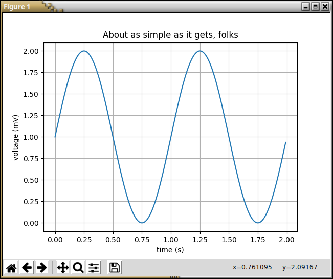

Set up the environment
Created for
Created by

Setting up Python
Anaconda users notes
Next slides guides you through the process of installing the needed tools for DataScience/DataAnalysis in Python.
But if you are already comfortable with Anaconda (i.e. you can use conda) you can skip the next slides, and use the time to verify that your environment is setup correctly.
Install Python on Windows - HowTo
Note, we'll be using Python 3!
- Download the Installer:
- Python Releases for Windows
- Select 32-bit and 64-bit versions according to your system
- Customize installation:
- installation location:
C:/Python3or whatever you like - Select "Add Python to PATH"
Windows Python Prerequisites
- Windows Python needs Visual C++ libraries/SDK so make sure you have them.
- Or install the 'Build Tools for Visual Studio 2019' from https://visualstudio.microsoft.com/downloads/#vstool-2019-family
Install Python on Windows - more info
Install Python on Mac - more info
Install Python on Linux
Verify installation:
- Open a Command Prompt/Terminal and type:
# check for python installed version: python --versions # check for pip installed version: pip --version - On Unix based systems, use
python3andpip3instead.
PIP - the Python Package Manager
PIP - the Python Package Manager
Python Virtual Environments
Python Virtual Environments
Virtual environment - Why?
- Python apps usually depends on many modules(packages), which depends on other packages, and very often - from a specific version of a package.
- Many system tools also depends on specific versions of installed Python packages.
- You don't want to pollute your system's Python environment!
Nor to pass through the dependency hell

Virtual environment - What?
- Virtual environments create an isolated Python environment for your project.
- Keep workflows between projects independent.
- There are many tools for working with virtual environments in Python (virtualenv, pyenv, venv, pipenv, poetry, conda, etc.)
- During this course we'll be using pipenv!
Higher-level tools (pipenv)
- pipenv - package, dependency and environment manager, that aims to bring the best of all packaging worlds (bundler, composer, npm, cargo, yarn, etc.) to the Python world. Windows is a first-class citizen.
- Simplicity, Security, Portability (Linux, MacOS, Windows)
- Easy to manage project's dependencies.Instead of pip's requirements.txt, pipenv creates two files: the Pipfile - for the packages you installed directly and Pipfile.lock for the dependencies and the specific version of the packages based on your Pipfile.
Higher-level tools (conda)
pipenv
pipenv
What?
- A dependency and virtual environments manager combined into one.
- Automatically creates and manages a virtual environments for your projects.
- Functionally similar to npm and other modern package managers.
- Useful/advanced readings:
- Pipenv && virtual environments on Hitchhikers Guide to Python by Kenneth Reitz - the creator of pipenv
- Simple Python Environments For Data Science
Install/Update/Remove
pip install --user pipenv
pip install --upgrade pipenv
pip uninstall pipenv
Set up PATH
- If pipenv isn’t available in your shell after installation, you'll need to add the user base's binary directory to your PATH.
- find the user base binary directory, and:
- Linux and macOS:
- Windows:
- Start again your Terminal, and write 'pipenv' - it should be present now.
- On some Windows versions, you may need to log out for the PATH changes to take effect.
$ python -m site --user-base
# /home/username/.local
# add it to your ~/.profile or ~/.bashrc file, or:
$ export PATH=$PATH:/home/username/.local/bin
$ py -m site --user-site
#C:\Users\Username\AppData\Roaming\Python36\site-packages
# add to PATH:
$ C:\Users\Username\AppData\Roaming\Python36\Scripts
Manage virtualenv with pipenv
Manage virtualenv with pipenv
Notes
- A virtual environment is associated with your project folder (and subfolders with max.depth 3, by default.)
- If you need more - set PIPENV_MAX_DEPTH
- You don't have to care where the virtualenv really lives.
- But you should be sure that you execute next commands in your project folder.
Create Virtual Environment
- pipenv can automatically creates a virtual environment (if there isn't any) and install a package in it, when you run:
- The default(system) Python version will be used
$ pipenv install packagename
Manage virtualenv
### Create virtualenv with system's Python3 version:
$ pipenv --three
### activate the virtualenv
$ pipenv shell
### Exit the virtualenv
(...)$ exit
### Output virtualenv information
$ pipenv --venv
### Remove the virtualenv
$ pipenv --rm
All options available with: pipenv --help
Video Resources
Intro to Pipenv - A Package Manager for Python by Pretty Printed
Useful video
Kenneth Reitz - Pipenv: The Future of Python Dependency Management - PyCon 2019
pipenv - example: simple_plot with matplotlib
pipenv - example: simple_plot with matplotlib
Create the file
- create the file "simple_plot.py" in your project root folder.
- Enter in it the code bellow:
import matplotlib.pyplot as plt
import numpy as np
t = np.arange(0.0, 2.0, 0.01)
s = 1 + np.sin(2*np.pi*t)
plt.plot(t, s)
plt.xlabel('time (s)')
plt.ylabel('voltage (mV)')
plt.title('About as simple as it gets, folks')
plt.grid(True)
plt.savefig("test.png")
plt.show()
example from: matplotlib.org
Prepare Virtualenv
- Open a terminal window and navigate to your project root folder.
# navigate...
$ cd your/project/folder
# make sure you are in it - list your files:
$ dir
# you have to see your 'simple_plot.py' listed
Run the program
try to run the simple_plot.py program
$ python simple_plot.py
Traceback (most recent call last):
File "simple_plot.py", line 1, in <module>
import matplotlib.pyplot as plt
ImportError: No module named matplotlib.pyplot
Yes, an error occurs, because we do not have the required module (matplotlib) installed
Install dependencies in a virtual environment
We will install the required modules in a safe virtual environment by pipenv!
# install packages safely with pipenv:
$ pipenv install matplotlib
Creating a virtualenv for this project…
...
To activate this project`s virtualenv, run the following
pipenv shell
Activate the virtual environment
$ pipenv shell
Spawning environment shell...
Run the program within the virtual environment
- Run the simple_plot.py program:
- It should run now - a windows with simple plots wil be opened:

$ python simple_plot.py
{kind=link}
Set up numpy, pandas, matplotlib, Jupyter Notebooks
Meet your tools
Note
- In next slides we are going to install the all packages needed for the course with the
pipenvcommand. - Make sure you that you are in your project folder with activated virtual environment
# navigate to your project folder:
$ cd your/project/foolder/path
# activate the virtual environment:
$ pipenv shell
numpy
- NumPy is the fundamental package for scientific computing with Python.
- It contains among other things:
- a powerful N-dimensional array object
- sophisticated (broadcasting) functions
- tools for integrating C/C++ and Fortran code
- useful linear algebra, Fourier transform, and random number capabilities
- Reference: numpy.org
$ pipenv install numpy
pandas
- The Python Data Analysis Library
- Provides high-performance, easy-to-use data structures and data analysis tools
- An open source, BSD-licensed library
- Build on top of numpy
- Lot's of Python ML tools are build on top of pandas (statsmodels and scikit-learn)
- Reference: pandas.pydata.org:)
$ pipenv install pandas
Matplotlib
- A Python 2D plotting library
- Produces publication quality figures in a variety of formats
- Matplotlib tries to make easy things easy and hard things possible
- Can generate plots, histograms, power spectra, bar charts, errorcharts, scatterplots, etc., with just a few lines of code
- Reference: matplotlib.org
$ pipenv install matplotlib
seaborn
- Seaborn is a sofisticated Python data visualization library
- Based on matplotlib
- Closely integrated with pandas data structures
- Features: An introduction to seaborn
- Reference: seaborn.pydata.org
$ pipenv install seaborn
The Jupyter Notebook
- A Web application that allows you to create and share documents that contain live code, equations, visualizations and narrative text
- Supports for over 40 programming languages
- Your code can produce rich, interactive output
- Big data integration
- Easily share your Notebooks using email, Dropbox, GitHub, the Jupyter Notebook Viewer and more
- Reference: jupyter.org
- Note that the classic Jupyter Notebook now is included in the Jupyter Lab package. Once you install
jupyterlabyou'll have both the classic Jupyter Notebook as well as the new Jupyter Lab Interface.
$ pipenv install jupyterlab
Git && GitHub (optional topic)
Git && GitHub
What is a VCS and how it makes life easier?
- VCSVersionControlSystem
- a system that records changes to a file (or directory) over time so that you can recall specific versions later
- You can version control all kind of work you do:
- Poetry, Images, Music, ...
- Programming
- DataScience/ML Projects and the DataSets
- Easily share your work with other team members
- There are different types and implementations of VCS.
- In this course we'll use git && GitHub
Installing and configuring git
- Installing Git
- Note for Windows Users - install from gitforwindows.org which also brings a nice features like
git bash,shell integrationand more
GitHub
- github.com is Web hosting service for projects using git
- Alternatives:
- GitLab
- BitBucket
- Create a free account on GitHub Join GitHub
VC Your Project and share it on GitHub
Adding an existing project to GitHub using the command lineReferences
References
NumPy on Youtube
Intro to Numerical Computing with NumPy (Beginner) | SciPy 2019 Tutorial | Alex Chabot-Leclerc
Pandas on Youtube
JupyterLab on YouTube
These slides are based on
customised version of
framework